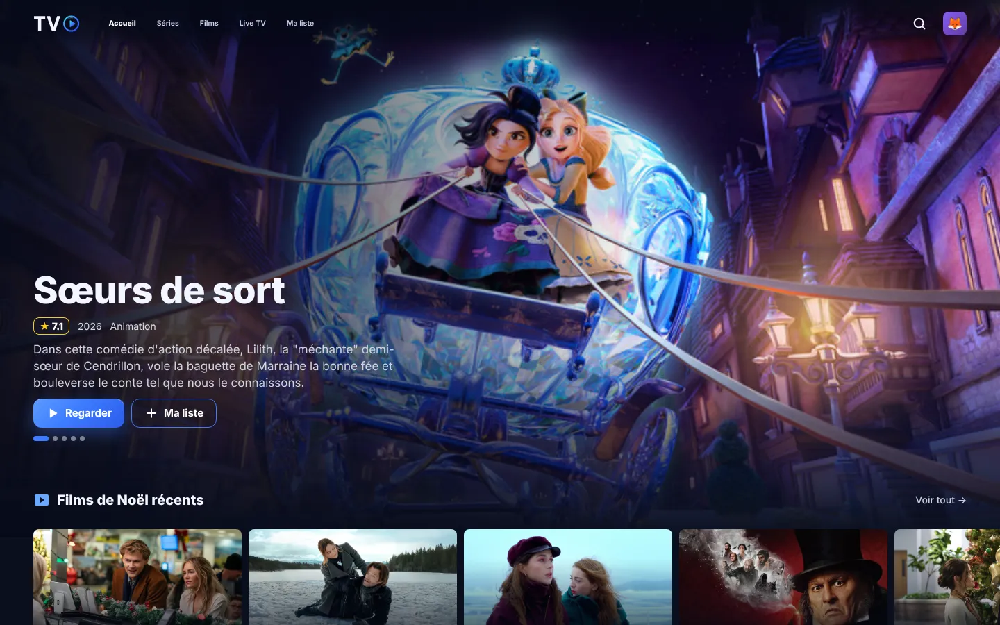
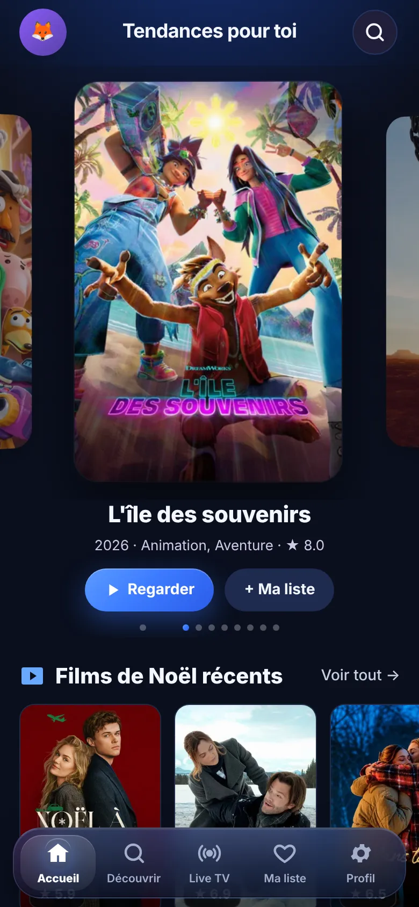
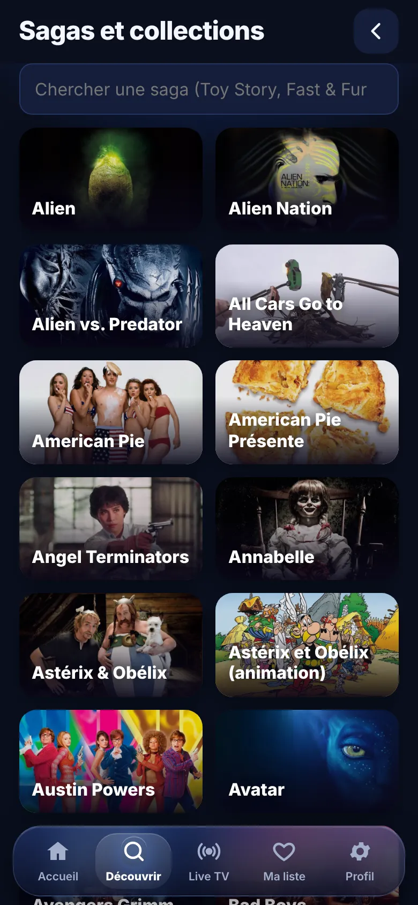
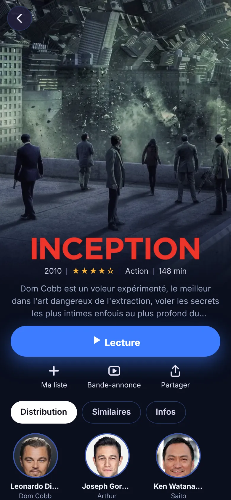
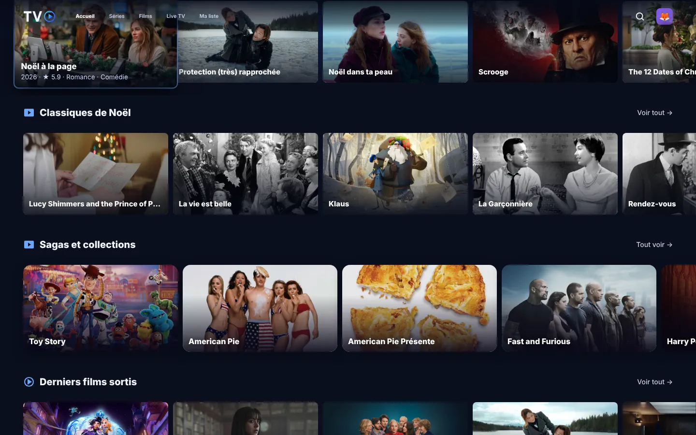

Une seule application sur ton iPhone, ton téléphone Android, ta télé et ton Mac. Un compte, et tout se synchronise : ta liste, ta progression, tes profils.


Un carrousel animé sur téléphone, de grandes images façon cinéma sur la télé et l'ordinateur, des fiches complètes en français avec bande-annonce VF.
L'accueil et ses tendances

Plus de 100 sagas réunies

Fiche, distribution, bande-annonce

TVO organise et lit tes contenus. Les vidéos viennent des services et add-ons que tu choisis d'ajouter.
Commence sur la télé, termine sur le téléphone. Ta liste, ta progression et tes profils suivent ton compte.
Avatars, profil enfant, code PIN et Face ID, temps d'écran et accès gérés par le profil principal.
Ajoute tes listes de chaînes : logos officiels et programme en cours sur chaque chaîne.
Titres, résumés et bandes-annonces en VF. Catégories, plateformes et sagas pour trouver vite.
Les sources sont testées et classées par langue, qualité et vitesse. Lecteurs intégrés VLC et MPV sur la télé.
Mot de passe chiffré, protection contre les tentatives de piratage, connexions en HTTPS, aucune publicité.
Télécharge la version de ton appareil, puis connecte-toi avec ton compte. Un nouveau compte est activé par l'administrateur : tu reçois un e-mail dès que c'est fait.
Avec l'appli gratuite Downloader
Installation avec ESign ou KSign
Fichier APK
Apple Silicon et Intel
Les mises à jour arrivent toutes seules : une bannière te propose d'installer la nouvelle version, puis un récapitulatif te montre ce qui a changé.
Un essai pour découvrir, puis un abonnement simple. Sans engagement, résiliable à tout moment.
Tous les appareils, jusqu'à 6 profils
2 mois offerts : soit 3,33 € par mois au lieu de 47,88 €
Oui. Crée-le dans l'appli ou en scannant le QR code affiché sur la télé. L'administrateur l'active (essai ou abonnement) et tu es prévenu par e-mail.
Ouvre TVO sur la télé et scanne le QR code avec l'appareil photo de ton téléphone. Tu peux aussi afficher un code à 6 chiffres dans l'appli du téléphone et le taper sur la télé.
Ton mot de passe est chiffré et n'est jamais stocké en clair. Les échanges passent en HTTPS. Aucune publicité, aucune revente de données. Tu peux supprimer ton compte à tout moment depuis l'appli.
Non. TVO est un lecteur et un organiseur : il affiche les informations des films (TMDB) et lit les vidéos des services et add-ons que tu ajoutes, dans le respect des droits des contenus.